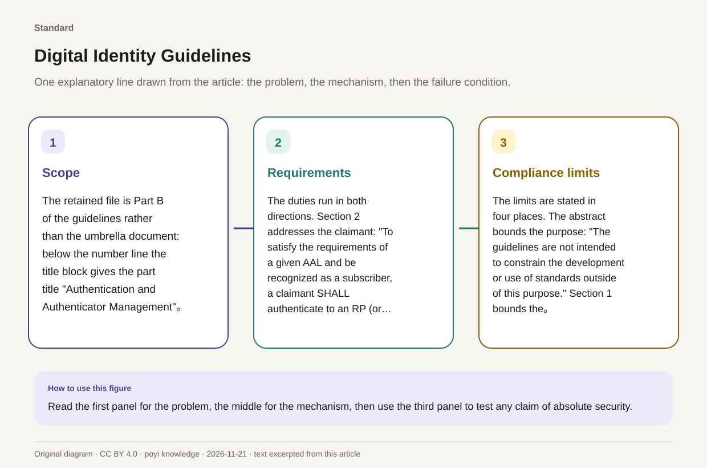
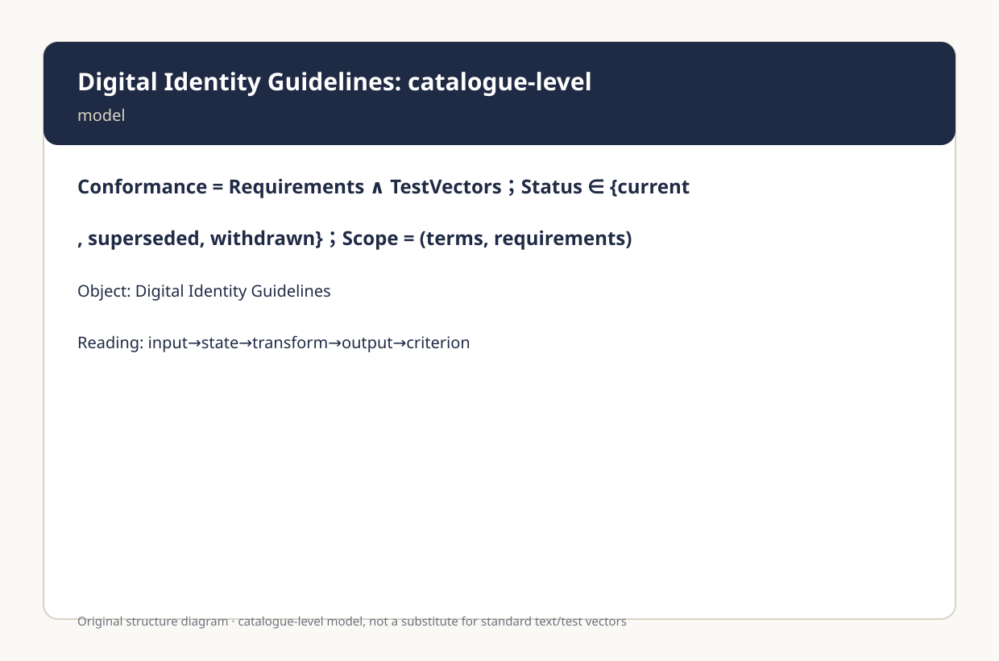

Principles
Standard: Digital Identity Guidelines (数字身份指南). The retained file is Part B of the guidelines rather than the umbrella document: below the number line the title block gives the part title "Authentication and Authenticator Management", and the free-access line reads "This publication is available free of charge from" line is followed by the DOI 10.6028/NIST.SP.800-63B-4, which marks it as the fourth edition of Part B. The abstract states its subject: "This guideline focuses on the authentication of subjects who interact with government information systems over networks to establish that a given claimant is a subscriber who has been previously authenticated." and states what it defines: "This document defines technical requirements for each of the three authentication assurance levels." Both phrasings agree with the part title: the output is per-level technical requirements, and the range is authentication and authenticator management.

Why it matters
Section 1 first unpacks the term: "Authentication is the process of determining the validity of one or more authenticators used to claim a digital identity by establishing that a subject attempting to access a digital service is in control of the secrets used to authenticate." The gap being closed is the difference in attacker capability, which is what the levels encode: "Stronger authentication (i.e., a higher AAL) requires malicious actors to have better capabilities and to expend greater resources to successfully subvert the authentication process." Read together, the two sentences locate the risk in a relation rather than an algorithm: what has to be established is control over the secret, and the levels are graded by the capability and resources an attacker must expend.
Applications
The duties run in both directions. Section 2 addresses the claimant: "To satisfy the requirements of a given AAL and be recognized as a subscriber, a claimant SHALL authenticate to an RP (or IdP, as described in [SP800-63C]) with a process whose strength is equal to or greater than the requirements at that level." Section 3.1.1.2 puts the concrete password constraints on verifiers and CSPs: "Verifiers and CSPs SHALL require passwords that are used as a single-factor authentication mechanism to be a minimum of 15 characters in length." and "When processing a request to establish or change a password, verifiers SHALL compare the prospective secret against a blocklist that contains known commonly used, expected, or compromised passwords." The three quotations bind both ends at once: the claimant must use a process at least as strong as the level, while verifiers and CSPs carry shall-level duties on password length and on blocklist comparison.

Limits & attacks
The limits are stated in four places. The abstract bounds the purpose: "The guidelines are not intended to constrain the development or use of standards outside of this purpose." Section 1 bounds the setting: "It does not address the authentication of a person for physical access (e.g., to a building)." The same section concedes that voluntary disclosure is out of reach: "The protections at the various AALs are intended to protect against credential theft and are not intended to protect against willful disclosure of credential secrets by a subscriber." And section 3.1.1 is blunt about the most common credential: "Passwords are not phishing-resistant." Read together: standards development outside this purpose is not constrained, physical access authentication is not handled, deliberate sharing or disclosure by a subscriber meets no technical countermeasure here, and passwords by themselves do not resist phishing.
History
The title block line reads "NIST SP 800-63B-4 Digital Identity Guidelines Authentication and Authenticator Management", i.e. the fourth edition of Part B, and the abstract records the supersession: "This publication supersedes NIST Special Publication (SP) 800-63B." The publication-history block names the edition it replaces, "Supersedes NIST SP 800-63B (June 2017; updated March 2, 2020)", and the review date, "Approved by the NIST Editorial Review Board on 2025-05-30." The citation line gives the seven authors and the year: "Temoshok D, Fenton JL, Choong YY, Lefkovitz N, Regenscheid A, Galluzzo R, Richer JP (2025) Digital Identity Guidelines: Authentication and Authenticator Management." The title block is dated July 2025 with the DOI DOI 10.6028/NIST.SP.800-63B-4. The umbrella Part 1 and Parts A and C are separate publications and are not in this file. The four quotations together are the edition facts of this file: the part number, the edition it replaces with its own update date, the approval date, and the author list with the year.
Worked example & verification
Formal model and reproduction steps
[S=\min_i S_i,\quad S_i\in{\text{密钥强度},\text{分组安全},\text{实现安全}}]
Digital Identity Guidelines: the registered public parameters, key material or randomness, and message are mapped through the stated transformation to an output checked against the registered criterion. The worked example is a structural reproduction, not a new test vector; parameter ranges, standard versions and implementation details remain source-bound.
References
- Wikipedia search entry for 数字身份指南. https://zh.wikipedia.org/w/index.php?search=%E6%95%B0%E5%AD%97%E8%BA%AB%E4%BB%BD%E6%8C%87%E5%8D%97
- Handbook of Applied Cryptography (Menezes, van Oorschot, Vanstone). https://www.cacr.math.uwaterloo.ca/hac/